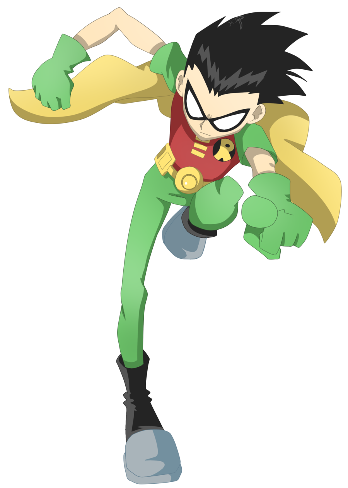

 Ricardo Tapia o Dick Grayson, mejor conocido como Robin es el líder de los jóvenes titanes y uno de los personaje principales de la Serie, cuya queja principal es que los Otros Titanes no hagan lo que él les ordena. Él es el titan número 1.Es el unico que parece no tener super poderes
Hasta el episodio Viejo Relajate no se sabía de que Robin se trataba. Sin embargo, debido a su fondo de circo, se revela desde que él es Dick Grayson, como en el original de la historieta.